Cúbito - Radio - Mano
Huesos del antebrazo, carpo, metacarpo y falanges.
Cúbito
Hueso largo situado en la mitad interna del antebrazo. Articula hacia superior con la tróclea humeral, hacia superoexterno e inferoexterno con el radio. El cuerpo se encuentra formando una S cursiva: tiene 3 caras y 3 bordes. Forma Prismática Triangular.
Díafisis
- Cara anterior: Inserción de músculos flexores de los dedos → Es más plana.
- Cara posterior: Inserción de músculos extensores de los dedos → Más filosa
- Cara interna: Inserción del músculo flexor profundo de los dedos.
- Borde anterointerno.
- Borde interóseo/externo: Inserción de la membrana interósea. → Más filoso
- Borde posterointerno.
{kind=link}
Epífisis
Proximal:
- Olécranon: Inserción del tríceps braquial. → Posterosuperior.
- Apófisis coronoides: Separada del olécranon por la cavidad sigmoidea mayor (Escotadura Troclear). → Externa, Anterior, es cóncava y articula con el Húmero
- Se inserta el M. Braquial Anterior.
- Cavidad sigmoidea menor (Escotadura Radial): Localizada en la región lateral (para la articulación con la cabeza del radio).
Referencia visualImagen 02
{kind=link}
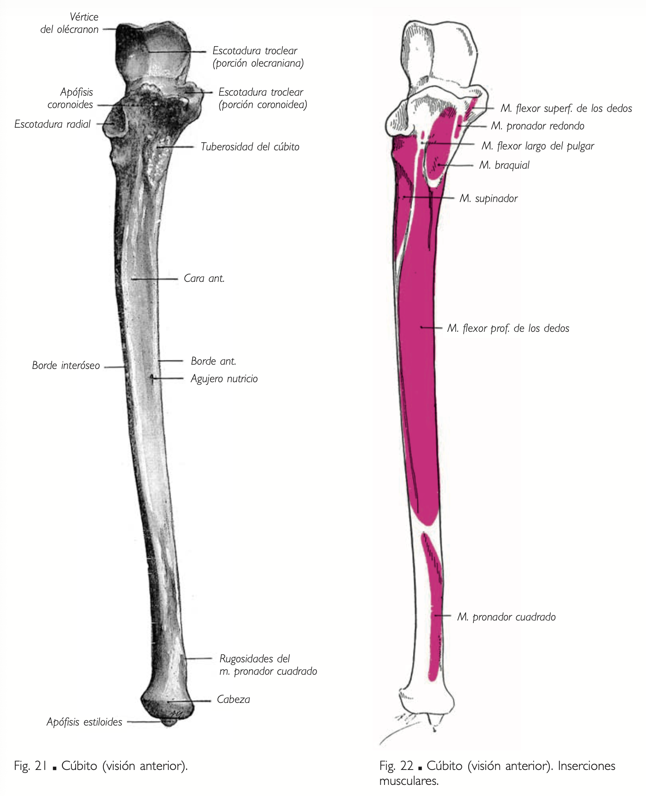
Referencia visualImagen 03
{kind=link}
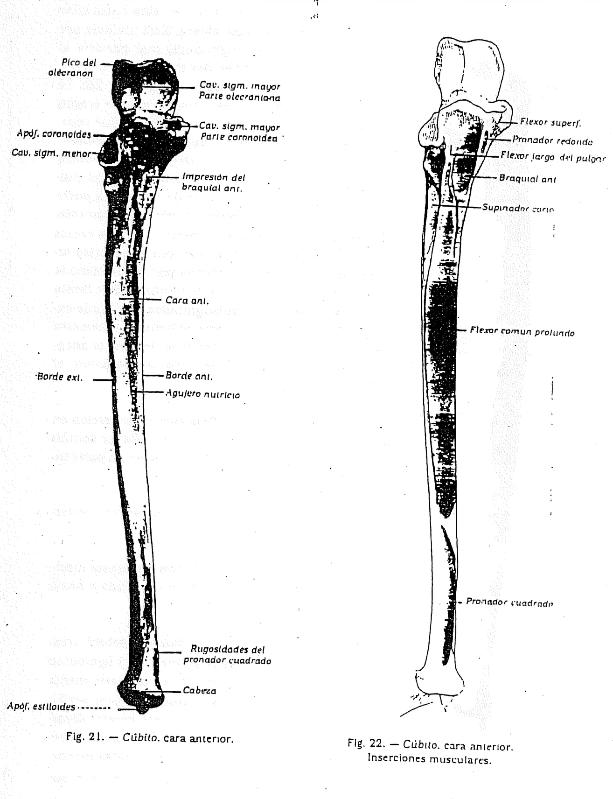
Epífisis Distal:
- Cabeza cubital: Articula con el radio (en la escotadura cubital).
- Apófisis estiloides cubital: Inserción del ligamento lateral interno de la muñeca. → Posterior
- Carilla articular radial.
Referencia visualImagen 04
{kind=link}
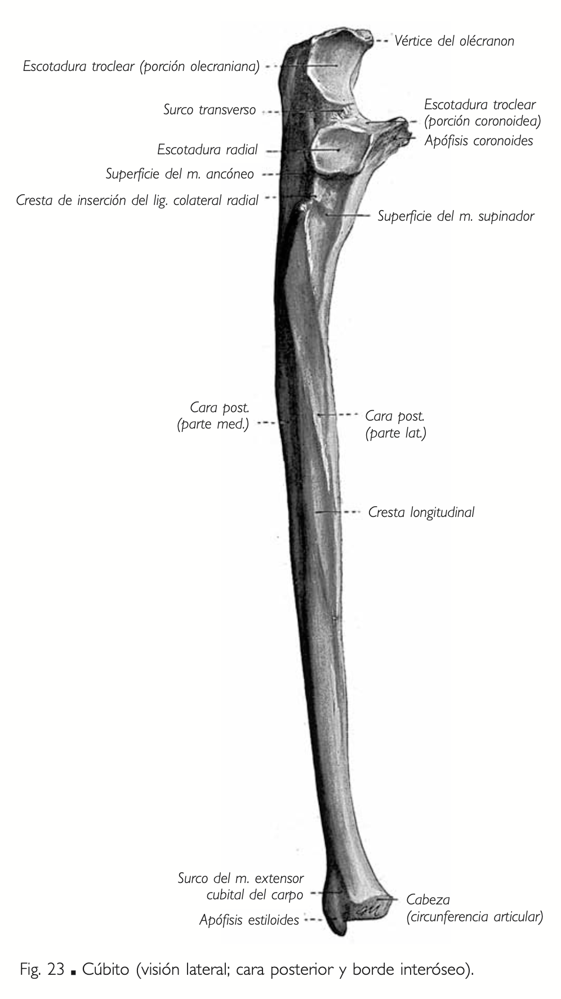
Referencia visualImagen 05
{kind=link}
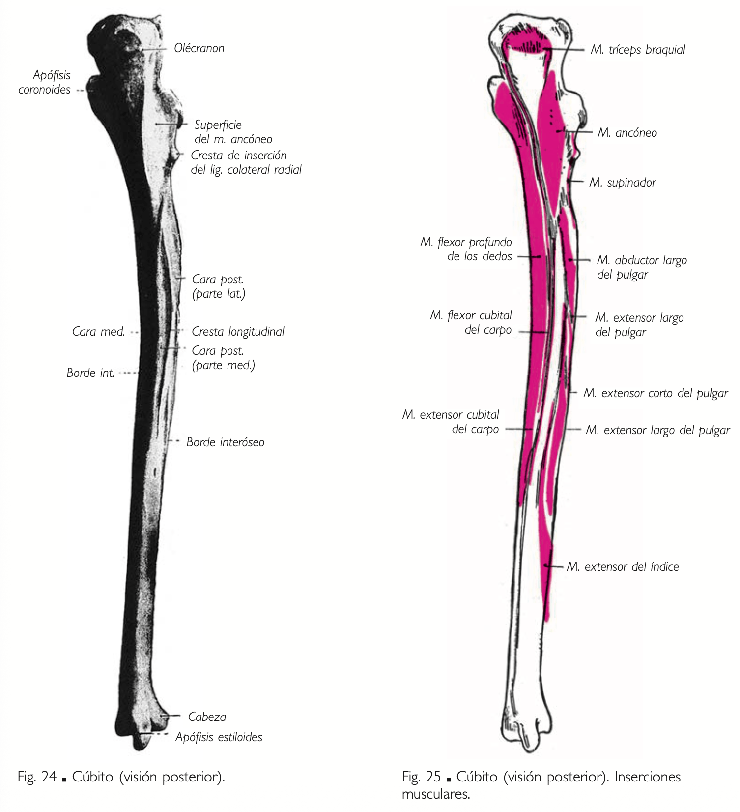
Radio
Hueso largo situado en la mitad externa del antebrazo. Articula hacia superior con el cóndilo humeral y el cúbito, hacia inferointerno con el cúbito, carpo y hacia inferior con el escafoides y el semilunar. El cuerpo es prismático triangular: tiene 3 caras y 3 bordes.
- Cara anterior: Inserción del grupo anterior del antebrazo. → Flexores
- Cara posterior: Inserción del plano profundo del grupo posterior del antebrazo. → Extensores
- Cara externa: Inserción del músculo ej: pronador redondo.
- Borde anteroexterno: Inserción del músculo flexor superficial de los dedos.
- Borde posteroexterno.
- Borde interóseo: Inserción de la membrana interósea.
Referencia visualImagen 06
{kind=link}
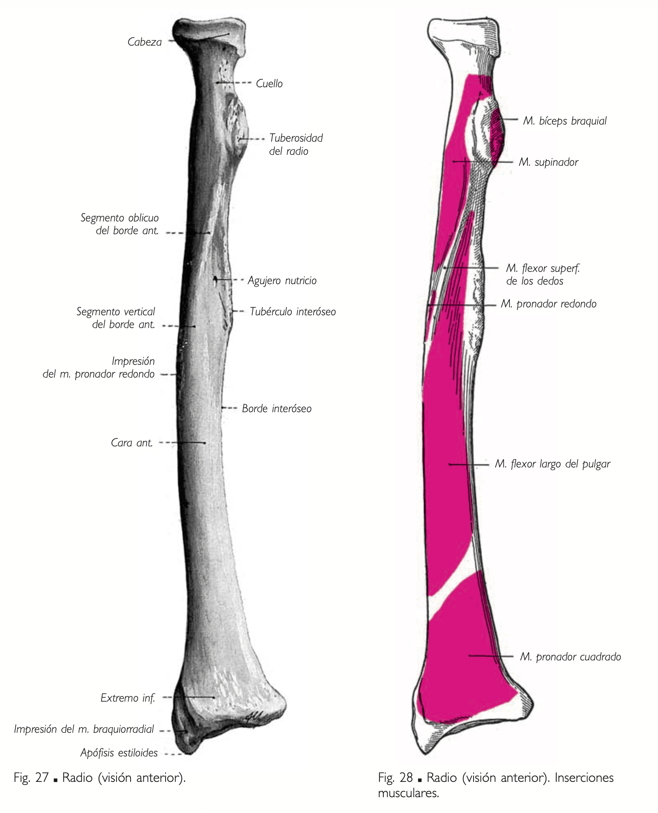
Epífisis Proximal:
- Cabeza del radio:
- Formada por la cúpula radial (superficie articular cóncava) → Articula con el Cóndilo Humeral.
- Rodete radial (borde periférico). → Articula con la Cavidad Sigmoidea Menor
Referencia visualImagen 07

Referencia visualImagen 08
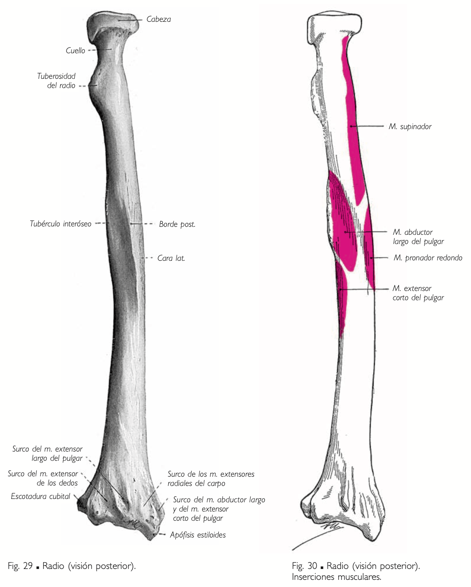
{kind=link}
- Cuello anatómico: Porción estrecha bajo la cabeza.
- Tuberosidad bicipital - Tuberosidad del Radio: Inserción del tendón del bíceps braquial. → Hacia Ant-Int.
Epífisis Distal:
- Apófisis estiloides radial:
- Inserción del músculo supinador largo (braquiorradial) y del ligamento lateral externo de la muñeca.
- Escotadura Cubital: Depresión para articular con la cabeza del cúbito (articulación radiocubital distal).
- Carillas articulares carpianas: Superficies para articular con el escafoides y el semilunar (huesos del carpo).
- Ant: Lisa.
- Post: Surcos Tendinosos - Ligamentarios.
- Int: Escotadura Sigmoidea
- Ext: Ap Estiloides.
- Inf: Carillas articulares carpianas.
Carpo
Conjunto de huesos cortos que forman el tercio proximal de la mano.
Se subdivide en:
- Fila proximal/superior: De Externo a Interno
Compuesta por el escafoides, semilunar, piramidal y pisiforme. → Escafoides y Semilunar articulan con el radio.
Huesos de la fila proximal:
- Escafoides: 6 caras + tubérculo del escafoides. → Más Externo
- Ligamento Anular
- Semilunar: 6 caras articulares. → Hacia externo con el escafoides, hacia interno con el piramidal.
- Piramidal: 6 caras articulares. → Hacia externo con el semilunar, hacia interno con el pisiforme.
- Pisiforme: 2 caras. → Cara anterior, posterior. Se encuentra montando al hueso piramidal, de manera que en la vista dorsal no se va a ver
Referencia visualImagen 09
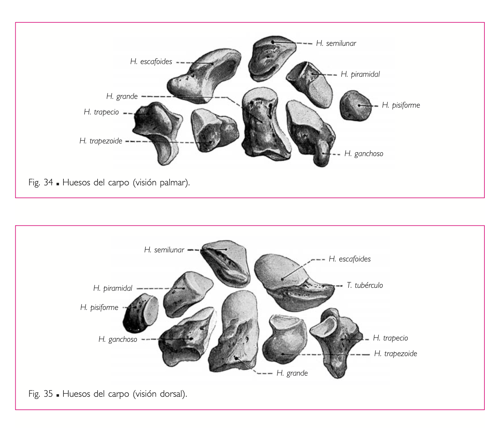
- Escafoides: 6 caras + tubérculo del escafoides. → Más Externo
{kind=link}
- Fila distal/inferior:
Formada por el trapecio, trapezoide, grande y ganchoso.
Huesos de la Fila Distal del Carpo:
- Trapecio: 6 caras + tubérculo del hueso trapecio.
- Trapezoide: 6 caras articulares.
- Grande: 6 caras + apófisis del hueso grande.
- Ganchoso: 6 caras + gancho/apófisis unciforme. → Forma de Gancho
- Ligamento Anular.
Referencia visualImagen 10
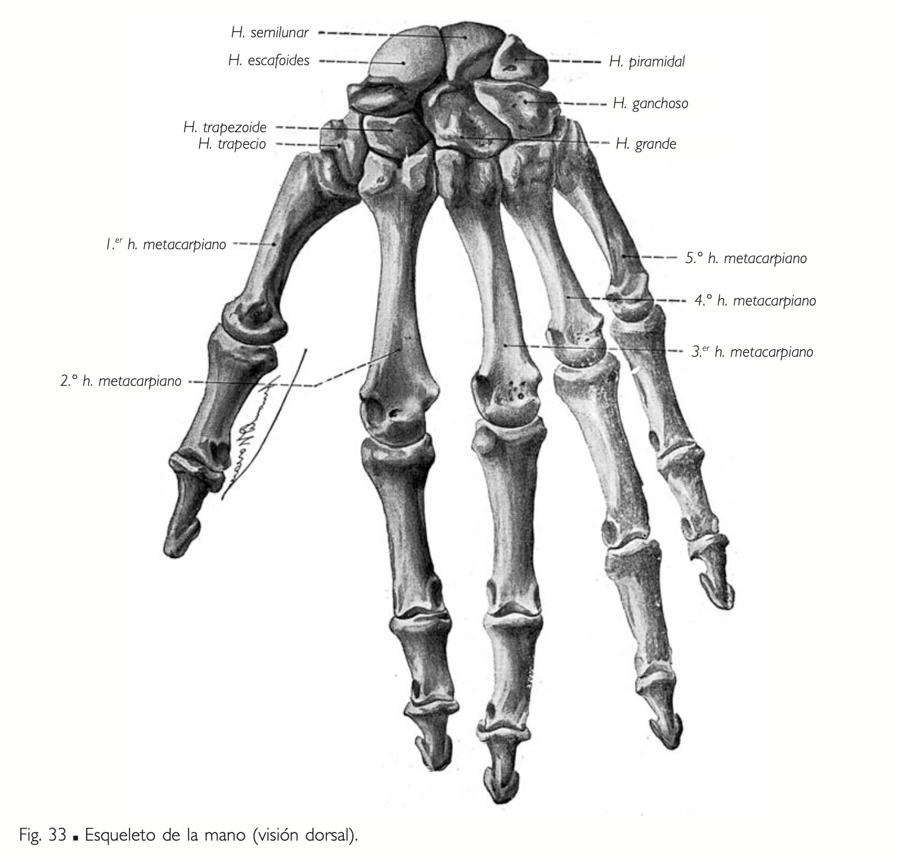
Referencia visualImagen 11
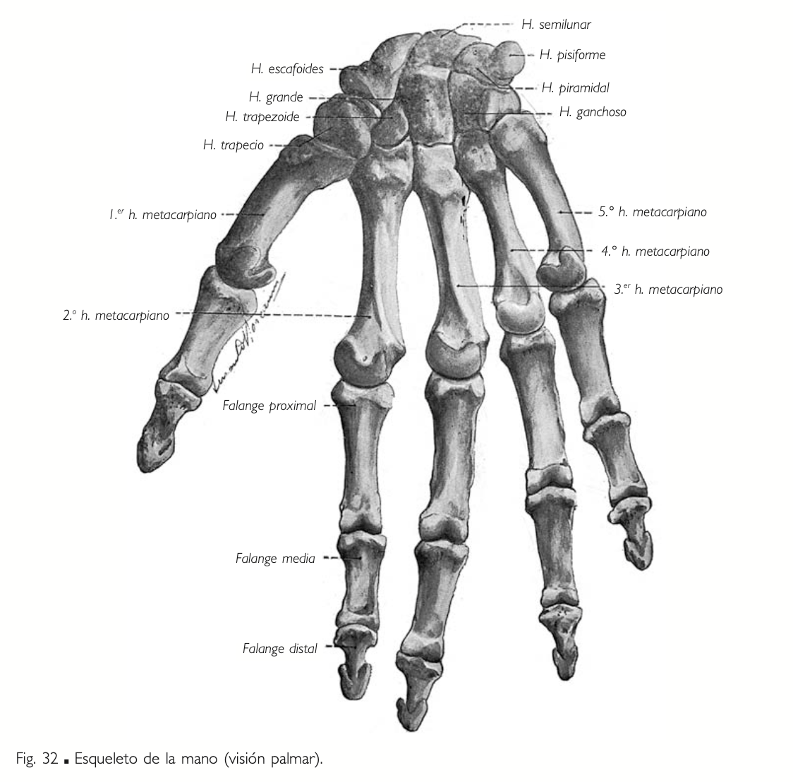
{kind=link}
{kind=link}
Metacarpo
Conjunto de huesos largos que forman el tercio medio de la mano.
Compuesto por 5 metacarpianos (numerados del 1 al 5 desde externo hacia interno, siendo el 1° el del pulgar).
- Epífisis proximal = base: Articula con la 2da fila del carpo.
- Epífisis distal = cabeza: Articula con la 1ª falange.
- Diáfisis: Forma prismática triangular (con 3 caras: anterior, posterior y lateral. Más 3 bordes).
Referencia visualImagen 12
{kind=link}
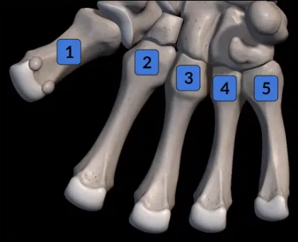
Dedos
Conjunto de huesos largos que forman el tercio distal de la mano.
- El 1° dedo (pulgar) cuenta con 2 falanges (falange proximal y falange distal o falangina).
- Del 2° al 5° dedo se observan 3 falanges (proximal, medial y distal o falangeta).
Estructura de cada falange:
- Epífisis proximal → base: Articula con:
- La cabeza del metacarpiano (en falanges proximales).
- La tróclea de la falange previa (en falanges medias y distales).
- Epífisis distal/tróclea: Articula con la falange distal (excepto en falanges distales, que terminan en una tuberosidad).
- Diáfisis: Forma prismática triangular (con 3 caras: anterior, posterior y lateral).
Referencia visualImagen 13
{kind=link}
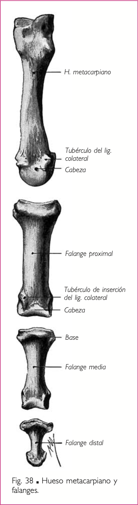